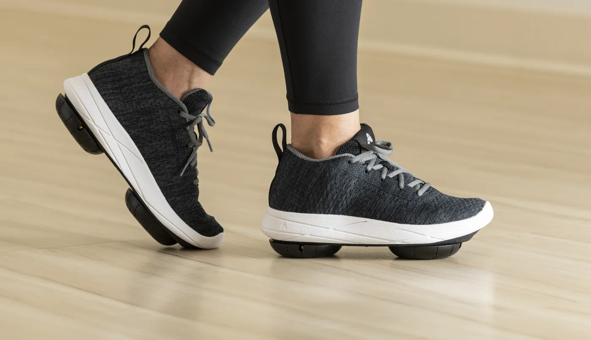

87%
ירידה ברמת הכאב
87% מהמטופלים דיווחו על ירידה ברמת הכאב לאחר הטיפול. הכאב נמדד בדיווח עצמי של המטופלים לאורך תקופת המעקב.
אפוסתרפיה היא טיפול רפואי לכאבי ברכיים, גב, ירך וקרסול, שנבדק בלמעלה מ-70 פרסומים מדעיים בכתבי עת שפיטים. במחקרים הקליניים 87% מהמטופלים דיווחו על ירידה ברמת הכאב ו-92% על שיפור בתפקוד היומיומי. הדף הזה מרכז את הממצאים.
מעבדת ההליכה הפרטית היחידה בארץ - אלפי חיישנים ממפים את הגוף בזמן הליכה ומאתרים מייד את מקור הכאב.
הצוות הרפואי מתאים את מערכת אפוסתרפיה באופן אישי ומדויק לתיקון העיוות הקיים בהליכה.
הולכים עם המערכת מספר דקות ביום - היא מסיטה את העומס מהמפרק ומאמנת מחדש את השליטה השרירית, בשגרה הרגילה שלכם.
בדיקות מעקב תקופתיות וצוות מומחים שמלווה אתכם לאורך כל תקופת הטיפול.
אפוסתרפיה נחקרה בלמעלה מ-70 פרסומים מדעיים בכתבי עת שפיטים, בהשתתפות כ-15,000 מטופלים. אלה הממצאים המרכזיים, כפי שדווחו במחקרים.
87% מהמטופלים דיווחו על ירידה ברמת הכאב לאחר הטיפול. הכאב נמדד בדיווח עצמי של המטופלים לאורך תקופת המעקב.
92% מהמטופלים דיווחו על שיפור ביכולת התפקוד. התפקוד נמדד בפעולות יומיומיות כמו עלייה במדרגות, עמידה ממושכת והליכה.
למעלה מ-70 מאמרים על אפוסתרפיה פורסמו בכתבי עת מדעיים שעברו ביקורת עמיתים, ביניהם 53 מחקרים קליניים.
המחקר על השיטה נמשך למעלה מ-21 שנה, בשיתוף מרכזים רפואיים ואוניברסיטאות בישראל ובעולם.
מערכת אפוסתרפיה מורכבת משתי יחידות קמורות המוצמדות לסולייה של נעל ייעודית. היחידות מסיטות את העומס מהאזור הכואב במפרק, ובמקביל מאלצות את שרירי הייצוב לעבוד אחרת בכל צעד. הכיול של מיקום היחידות נעשה אישית לכל מטופל, על בסיס מדידת דפוס ההליכה במעבדת ההליכה.
ההליכה עם המערכת נמשכת מספר דקות ביום ומשתלבת בשגרה הרגילה, בבית או בעבודה. לאורך התהליך מתבצעות בדיקות מעקב תקופתיות, ובהן הצוות הקליני מכייל מחדש את המערכת בהתאם לשינויים בדפוס ההליכה.
התוצאות המדווחות הן ממוצעים ממחקרים קליניים. תוצאות הטיפול עשויות להשתנות ממטופל למטופל, והן תלויות באבחנה, במצב הרפואי ובהיענות לתוכנית הטיפול.
טיפול שמרני, לא פולשני ומבוסס מחקר, שמחזיר אתכם לחיים בלי לעצור אותם.
בדיקה בלעדית במעבדת ההליכה, מבוססת טכנולוגיה חדשנית - ללא עלות וללא התחייבות.
הוכח במחקרים קליניים שפורסמו בכתבי העת המובילים בעולם כמפחית כאב ומשפר תפקוד.
טיפול שמרני ולא פולשני - בלי תופעות הלוואי ובלי תקופת החלמה ממושכת.
הפחתת כאב ושיפור בתפקוד שמורגשים בהליכה, לאורך היום וחזרה לשגרה.
בדיקות מעקב תקופתיות וצוות מקצועי שמלווה אתכם לאורך כל תקופת הטיפול.
הטיפול משתלב בשגרת היומיום שלכם, בלי לשבש אותה - במקום ובזמן שנוחים לכם.
דקה אחת שמסבירה איך הטיפול מחזיר אנשים להליכה ללא כאב.

במחקרים קליניים שפורסמו בכתבי עת שפיטים, 87% מהמטופלים דיווחו על ירידה ברמת הכאב ו-92% דיווחו על שיפור בתפקוד היומיומי. הטיפול נחקר בלמעלה מ-70 פרסומים מדעיים, ביניהם 53 מחקרים קליניים.
לא. אפוסתרפיה היא טיפול שמרני ולא פולשני. הוא מבוסס על מערכת הליכה ביומכנית הנלבשת על הרגל, ללא ניתוח וללא תרופות. הטיפול אינו מחליף ייעוץ רפואי ואינו נועד להניא מטיפולים אחרים שהומלצו לכם.
ההליכה עם המערכת נמשכת מספר דקות ביום ומשתלבת בשגרה הרגילה, בבית או בעבודה. משך ההליכה המדויק נקבע אישית על ידי הצוות הקליני, בהתאם לאבחנה ולדפוס ההליכה שנמדד.
כן. הטיפול באפוסתרפיה מוכר ובהשתתפות כל קופות החולים בישראל: כללית, מכבי, מאוחדת ולאומית. גובה ההשתתפות משתנה בין הקופות ובין מסלולי הביטוח המשלים, ולכן כדאי לבדוק את הזכאות שלכם מול הקופה.
בדיקת ההתאמה כוללת אבחון במעבדת ההליכה, שבו מערכת ממוחשבת מודדת את דפוס ההליכה ומאתרת את מקור הכאב, ולאחריה ייעוץ מקצועי על התאמת הטיפול. הבדיקה ניתנת ללא עלות וללא התחייבות.
לאפוסתרפיה חמישה מרכזים בישראל: הרצליה, חיפה, ירושלים, ראשון לציון ואשקלון. שעות הפעילות משתנות בין המרכזים, והנציג שיחזור אליכם יתאם את הפגישה במרכז הקרוב אליכם.
בדיקה ואבחון במעבדת ההליכה, ללא עלות וללא התחייבות. בדקו אם אפוסתרפיה מתאימה עבורכם.
בדיקה ואבחון במעבדת ההליכה - השאירו פרטים ונחזור אליכם בהקדם.